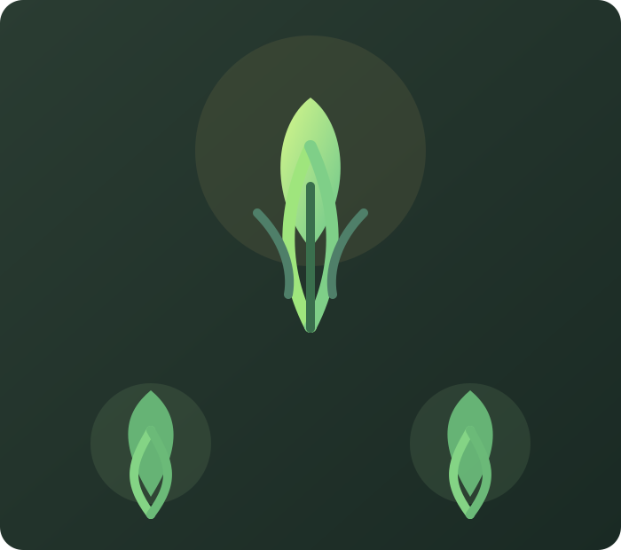
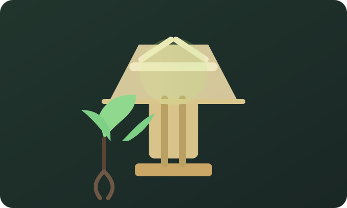
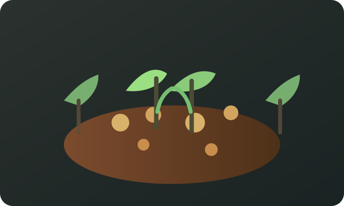

Wurzelwissenschaft
Die Ausrüstung aus meinen Videos auf einen Blick: das richtige Licht, die richtige Erde und Moos für gesunde Zimmerpflanzen.
Anzeige / Werbung: Links mit * sind Amazon-Partnerlinks. Als Amazon-Partner verdiene ich an qualifizierten Verkäufen. Für dich ändert sich am Preis nichts. Mehr erfahren



Pflanzenlampen für den Winter
Im Winter bekommen Zimmerpflanzen oft nur einen Bruchteil des Sommerlichts. Eine Pflanzenlampe gleicht das aus – gegen lange, dünne Triebe und gelbe Blätter.
Die richtige Erde für gesunde Wurzeln
Wurzeln brauchen Wasser und Luft. Normale Blumenerde speichert Wasser gut, mineralisches Substrat sorgt für Luft und verhindert Staunässe.
Sphagnum-Moos – der Allrounder
Sphagnum speichert ein Vielfaches seines Gewichts an Wasser. Ideal für Moosstäbe, zum Bewurzeln von Ablegern und für Orchideen.
Hallo, ich bin Nirjhar von Wurzelwissenschaft. Auf Instagram, YouTube und TikTok zeige ich, wie deine Zimmerpflanzen gut durch jede Jahreszeit kommen. Hier findest du die Produkte, die ich in meinen Videos empfehle.